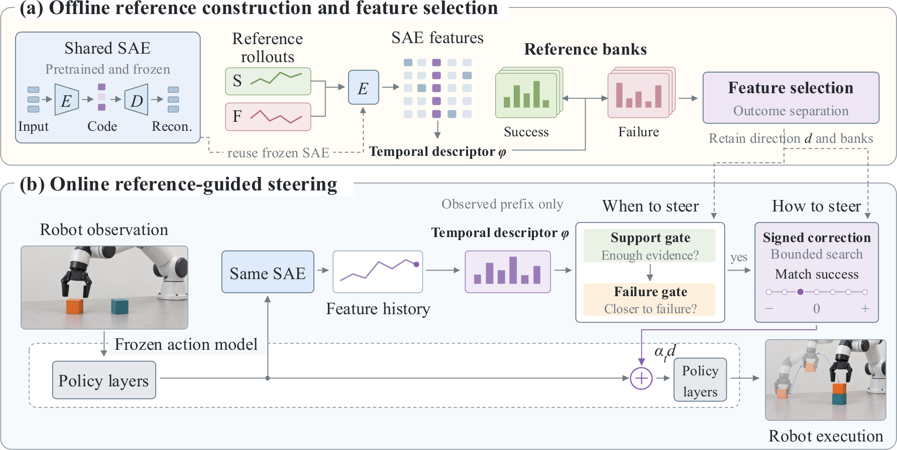

Inference-time steering for frozen robot policies
SteerActTemporally Gated Single-Feature Steering of Frozen Action Models
More successful robot policies. One sparse feature. No fine-tuning.
Successes and failures leave different temporal signatures in sparse latent space. SteerAct uses these signatures to guide online, gated interventions—while keeping the policy frozen.
Paper overview
Abstract
Improving pretrained robot action models from a few rollouts requires identifying what to steer, when to intervene, and the sign of the correction. We find that successful and failed executions exhibit distinct temporal patterns in sparse latent space, and that steering one feature per task can improve closed-loop success without updating model weights.
SteerAct summarizes sparse-feature activation histories from successful and failed rollouts, constructs outcome-conditioned reference banks, and selects the feature with the strongest outcome separation. Online, a support gate checks whether the observed history provides enough evidence for comparison, while a failure gate tests whether its descriptor is closer to failed than successful references. When both gates are open, a bounded search selects a signed correction predicted to move the current descriptor closer to the success bank.
Using 24 outcome-labeled reference rollouts per task, SteerAct improves task success by approximately 10% relative to unsteered policies across π0.5, Fast-WAM, RoboTwin 2.0, DexJoCo, and real-world manipulation.
Method
Reference-guided steering, end to end.
Outcome-labeled rollouts build the reference banks offline; supported, failure-like prefixes trigger signed corrections online.

Real robot results
Same policy. Higher success.
Choose a task to compare one unsteered failure with one SteerAct success.
Simulation results
Same task. With and without steering.
Benchmark
How it works
See when steering turns on.
Feature activation, gate states, and both rollouts on one timeline.
Selected feature and intervention
Loading the measured rollout footage.
Unsteered timestep 0700 / 1200
Loading the measured rollout footage.
SteerAct timestep 0700 / 1200
Shared timeline
Both rollouts